Menu
Appetizers
Shrimp Skewers
Imagine a whimsical platter adorned with shrimp skewers transformed into playful cat shapes. Each skewer features succulent shrimp arranged to resemble the graceful curves of a feline, with meticulous attention to detail.
Price: $20.00
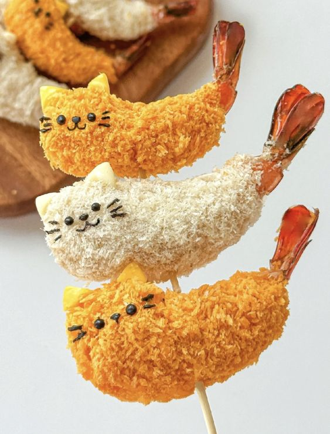Pizza Bites
Tiny, bite-sized pizza creations that mimic the adorable face of a cat. Each pizza bite is a miniature masterpiece, with a fluffy dough base serving as the canvas for creativity. Picture gooey mozzarella cheese forming the base layer, perfectly melted and bubbling around the edges. Then, imagine the toppings meticulously arranged to bring the cat's face to life
Price: $30.00
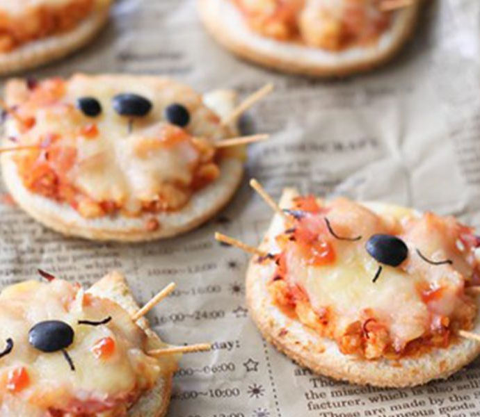Chicken Leg
Visualize a culinary creation that combines the savory succulence of chicken legs with the playful charm of a cat's face. Each chicken leg is expertly prepared and seasoned to perfection, with crispy golden skin giving way to tender, juicy meat beneath. But what sets these chicken legs apart is their whimsical presentation – they're crafted to resemble the face of a cat.
Price: $20.00
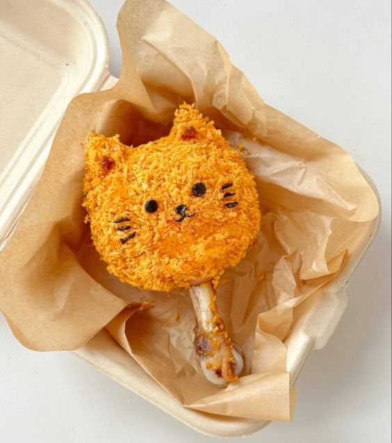Kawaii Dumplings
a plate of dumplings that not only tantalize your taste buds but also melt your heart with their adorable appearance. These kawaii dumplings are like little works of art, meticulously crafted to evoke feelings of joy and cuteness. Each dumpling is carefully formed into shapes reminiscent of adorable characters or animals. Picture dumplings shaped like pandas, bunnies, or even tiny kittens, with every detail delicately crafted by skilled hands. The dough is soft and pillowy, yielding to reveal a flavorful filling that bursts with every bite.
Price: $30.00
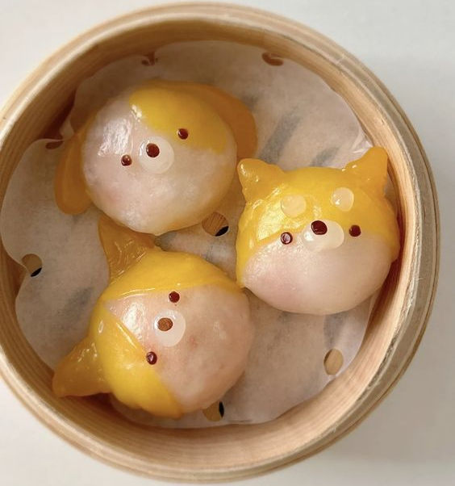Main Dishes
Burger
Visualize a whimsical culinary creation where the traditional burger bun is transformed into adorable cat-shaped buns. Each bun is soft and fluffy, with just the right amount of sweetness to complement the savory filling inside. The buns are carefully crafted to resemble the face of a cat, with round shapes forming the cheeks and pointed ears protruding from the top. Delicate details such as sesame seeds for the eyes and a small piece of olive for the nose bring these cat bun burgers to life.
Price: $30.00
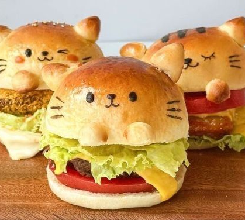Spaghetti
Picture a plate of spaghetti, with long strands of pasta forming the body of the cat. The pasta is perfectly cooked al dente, providing just the right amount of bite. But what truly brings this dish to life are the creative touches that evoke the essence of a cat. Imagine using cherry tomatoes or meatballs for the eyes, with olive slices or peppercorns for the pupils, giving the cat a mischievous twinkle. Thin strips of bell pepper or cucumber can be used to create the whiskers, adding a playful flair to the dish. And for the nose, a small mound of marinara sauce or a cherry tomato could provide the finishing touch.
Price: $35.00
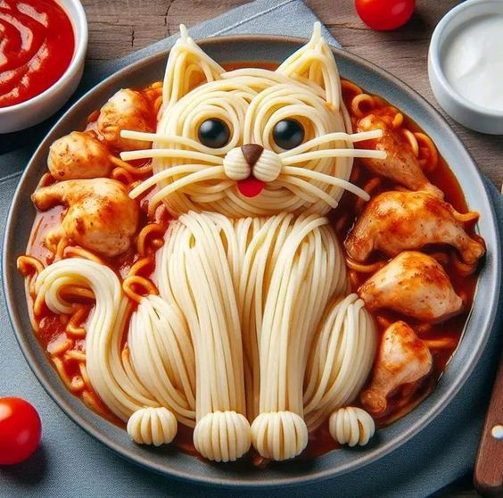Tacos
A whimsical twist on traditional tacos where the shells are shaped like adorable cat faces, adding a playful touch to this beloved dish. Each taco shell is carefully crafted to resemble the face of a cat, with round shapes forming the cheeks and pointed ears protruding from the sides. The taco cat shells are golden and crispy, providing the perfect vessel for a delicious filling. Inside, you'll find a flavorful combination of ingredients, from seasoned ground beef or shredded chicken to vibrant veggies and zesty salsa.
Price: $35.00
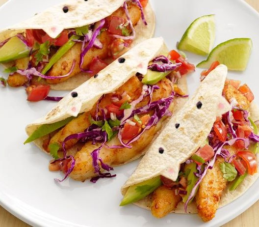Kawaii Kitty Sushi Delights
Imagine a purr-fect fusion of culinary artistry and feline charm! Picture delicate mounds of fluffy, vinegared sushi rice, lovingly shaped into the likeness of playful cats, each with their own distinct personality.
Price: $0.00

Desserts
Donuts
A delightful array of kawaii donuts, each one a miniature work of art designed to evoke feelings of joy and cuteness. These donuts are more than just a sweet treat – they're tiny masterpieces that brighten up any occasion with their adorable appearance. Imagine fluffy donuts adorned with pastel-colored icing and sprinkles, reminiscent of soft clouds on a sunny day. Some donuts may be shaped like playful animals such as pandas, bunnies, or kittens, with delicate details meticulously crafted from fondant or icing. Picture others decorated with smiling faces, featuring cute expressions that instantly bring a smile to your face. These donuts might have tiny chocolate chip eyes, a drizzle of icing for a mouth, and a sprinkle of sugar for rosy cheeks.
Price: $30.00
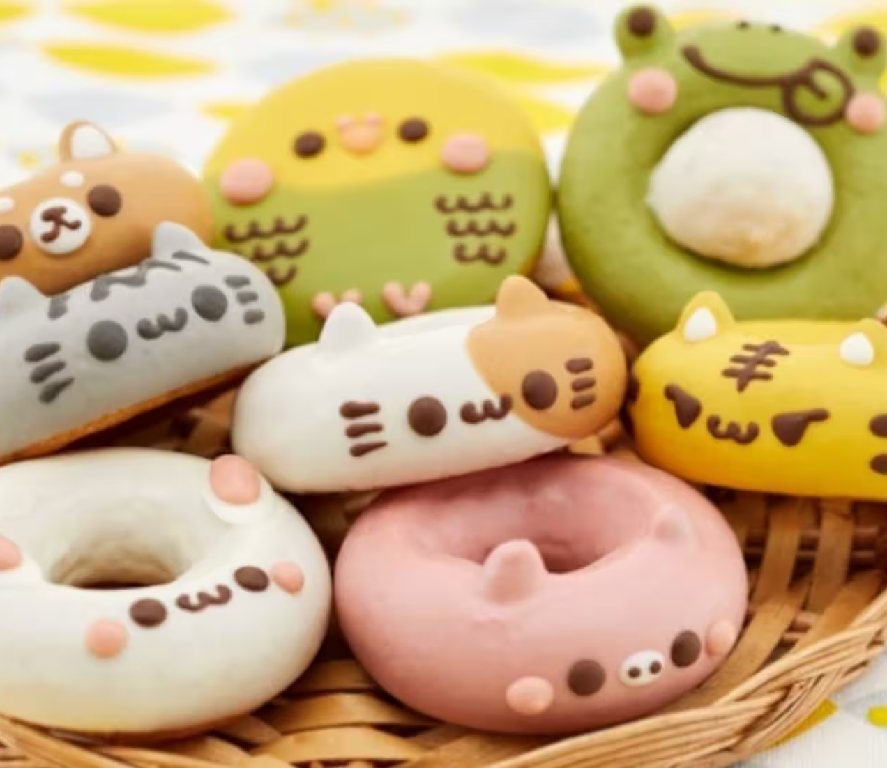Ice Cream
Imagine a whimsical dessert that combines the creamy sweetness of ice cream with the adorable charm of a kitten's face. Picture a scoop of velvety ice cream nestled in a bowl, meticulously crafted to resemble the face of a cat. The scoop of ice cream serves as the cat's head, with smooth, rounded edges forming the cheeks and ears. Delicate touches of whipped cream or frosting create the cat's facial features – two chocolate chips for the eyes, a small triangle of chocolate or a candy nose, and carefully piped lines for the whiskers.
Price: $25.00
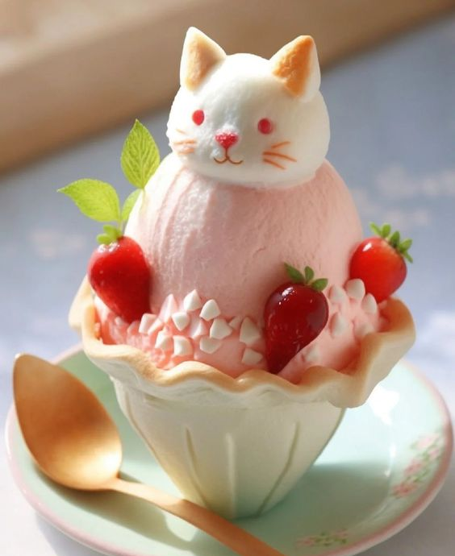Macarons
A delightful assortment of macarons transformed into adorable kitty faces, each one a miniature masterpiece of sweetness and charm. These kitty face macarons are more than just delicious treats – they're tiny works of art that bring a smile to your face with their playful appearance. Imagine delicate macaron shells in pastel hues, carefully crafted to resemble the shape of a cat's head. The smooth surface of each macaron shell serves as the canvas for intricate details that bring the kitty faces to life. Picture tiny ears made from almond slices or fondant, perched atop each macaron shell, adding a touch of whimsy to the design. Delicate features such as chocolate chip eyes, a small heart-shaped nose, and piped lines for whiskers complete the adorable kitty faces.
Price: $35.00
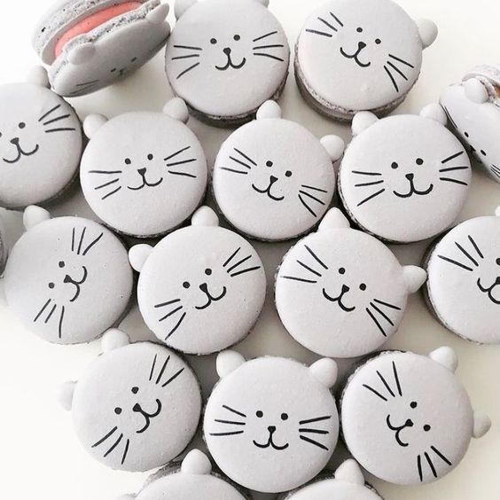Tanghulu
A whimsical and delicious twist on tanghulu, with each skewered treat transformed into an adorable kitty face. Tanghulu, traditionally made with skewered fruits coated in a crispy sugar glaze, takes on a playful new form with this creative adaptation. Imagine plump strawberries or other bite-sized fruits skewered on bamboo sticks, each one coated in a glossy sugar glaze that adds a satisfying crunch with every bite. But what sets these tanghulu apart is their charming presentation – they're shaped and decorated to resemble the face of a cat. Picture the skewered fruits arranged to form the shape of a cat's head, with two strawberries serving as the ears, and a larger fruit, such as a peach or an apple slice, forming the face. Delicate details such as chocolate chips for the eyes, a small triangle of fruit for the nose, and thin slices of fruit for the whiskers, bring the kitty faces to life.
Price: $30.00
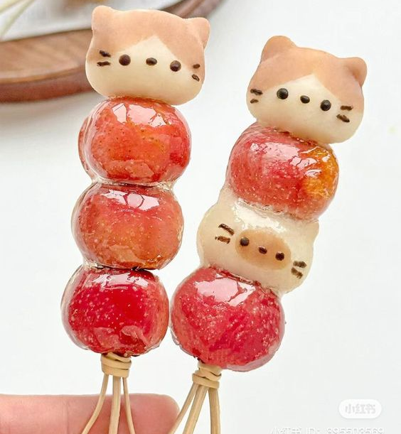Drinks
Milk
A charming ceramic cup shaped like a cat, with its adorable features bringing joy to every sip of milk. This cup is not just a vessel for your beverage; it's a delightful piece of tableware that adds a touch of whimsy to your daily routine. Imagine the cup's handle crafted to resemble a playful cat tail, curling around the side for easy gripping. The body of the cup is shaped like a cat's head, with round cheeks and perky ears that add to its irresistible charm. Delicate details such as whiskers and a cute nose give the cup personality, making it a favorite among cat lovers.
Price: $6.00
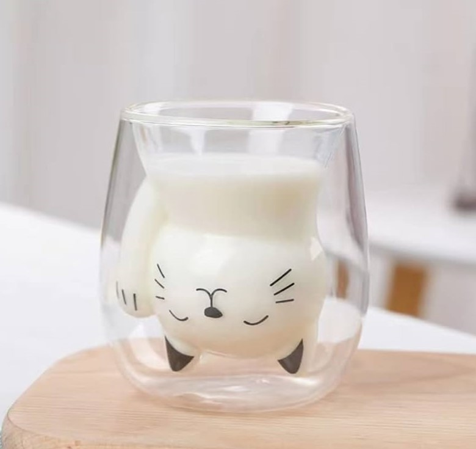Coffee
A charming kitty-shaped figure pops out from the frothy surface of a freshly brewed cup of coffee. As you take a sip of your morning brew, you're greeted by the unexpected sight of a cute kitty emerging from the depths of the steaming liquid. Imagine the foam atop your coffee forming the shape of a playful cat's head, complete with pointy ears and whiskers. Suddenly, as if by magic, the foam kitten pops out from the surface, its tiny paws reaching out as if to say hello. The sight brings a smile to your face as you marvel at the adorable surprise in your cup. The foam kitty adds a touch of whimsy to your morning routine, making your coffee break feel like a playful adventure.
Price: $6.00
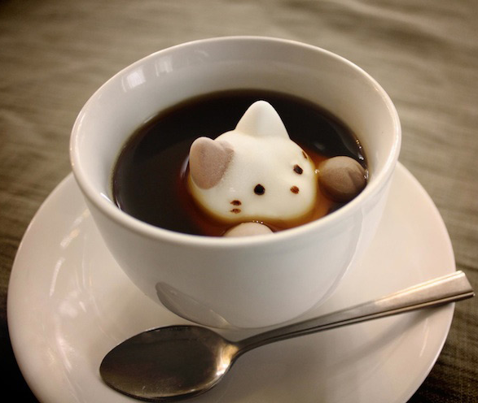Meowcha Latte
A soothing matcha latte, topped with adorable froth kittens that make each sip a delightful experience. As you lift the cup to your lips, you're greeted by the sight of tiny kittens crafted from creamy froth, frolicking atop the vibrant green surface of your latte. Picture each froth kitten perched on the edge of your cup, with delicate ears, whiskers, and tiny paws created by expertly steaming and frothing the milk. These froth kittens add a whimsical touch to your matcha latte, transforming it from a simple beverage into a work of art. With each sip, you taste the earthy notes of the matcha combined with the creamy sweetness of the frothed milk, creating a harmonious flavor profile that delights your senses. And as you reach the bottom of the cup, you can't help but smile at the playful sight of the froth kittens lingering on the surface.
Price: $12.00
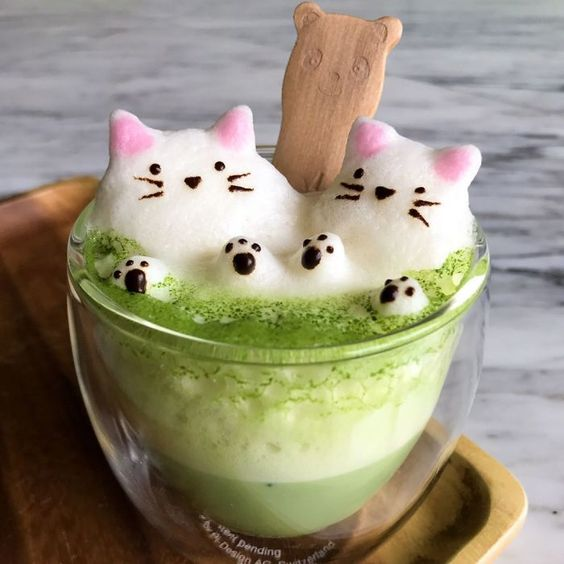Cocktail
A sophisticated purple cocktail served in a sleek glass, with a playful twist—a black cat skewer perched on the rim, adding a touch of mystery and elegance to the drink. Imagine the cocktail itself, a rich purple hue created by a blend of fruity liqueurs and spirits. Perhaps it's a combination of blueberry vodka, elderflower liqueur, and a splash of cranberry juice, resulting in a vibrant and tantalizing concoction. Now picture the black cat skewer, carefully crafted from a dark fruit such as blackberries or dark grapes, with small slices forming the ears, tail, and whiskers. The skewer is elegantly placed on the rim of the glass, its silhouette adding a hint of intrigue to the overall presentation. As you take a sip of the cocktail, you're greeted by a burst of flavors—sweet and tangy notes dancing on your palate, with a subtle hint of floral and fruity undertones. Meanwhile, the black cat skewer adds a playful element to the experience, inviting you to embrace the mysterious allure of the night.
Price: $12.00
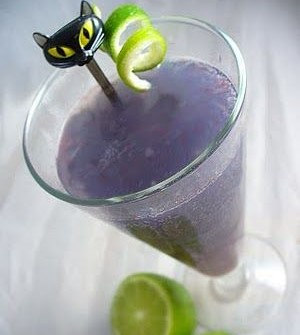